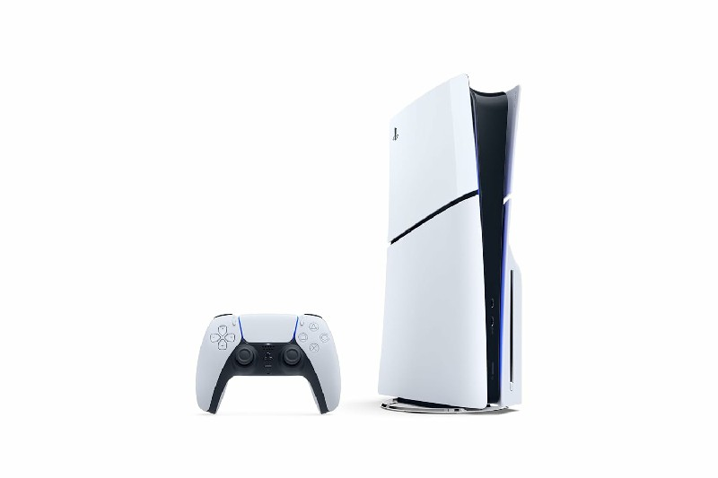

Sobre nuestro sitio web
Encuentre las ultimas noticias e información sobre el mundo de los videojuegos en nuestra pagina web.
Juegos Recomendados


Articulos mas vendidos.
Nintendo Switch™ with Neon Blue and Neon Red Joy Con™
Juega en casa o sobre la marcha con un sistema. El sistema Nintendo Switch™ está diseñado para ir donde quiera que lo hagas, transformándose instantáneamente de una consola doméstica que juegas en la televisión a un sistema portátil que puedes jugar en cualquier lugar. Así que tienes más tiempo para jugar los juegos que amas, como quieras.
Comprar-294.99$Xbox Series X
Presentamos Xbox Series X, la Xbox más rápida y potente que nunca. Juega miles de títulos de cuatro generaciones de consolas: todos los juegos se ven y juegan mejor en Xbox Series X. En el corazón de la Serie X se encuentra la arquitectura Xbox Velocity, que combina una SSD personalizada con software integrado para un juego más rápido y optimizado con tiempos de carga significativamente reducidos. Muévete sin problemas entre varios juegos en un destello con un resumen rápido. Explora nuevos mundos ricos y disfruta de la acción como nunca antes con los inigualables 12 Teraflops de potencia de procesamiento gráfico crudo. Disfruta de juegos en 4K con hasta 120 fotogramas por segundo, sonido espacial 3D avanzado y mucho más.
Comprar-469$PlayStation®5 console (slim)
La consola PS5 desata nuevas posibilidades de juego que nunca anticipaste. Experimenta una carga ultrarrápida con un SSD de ultra alta velocidad, una inmersión más profunda con soporte para retroalimentación háptica, disparadores adaptativos y audio 3D*, y una nueva generación de increíbles juegos de PlayStation Velocidad de rayo: aproveche la potencia de una CPU, GPU y SSD personalizadas con E/S integradas que reescriben las reglas de lo que una consola PlayStation puede hacer.
Comprar-499$Meta Quest 2
Explora un universo en expansión de más de 500 títulos en juegos, fitness, social/multijugador y entretenimiento, incluyendo lanzamientos exclusivos y experiencias de realidad virtual totalmente únicas. Disfruta de una jugabilidad rápida y fluida y gráficos inmersivos a medida que la acción de alta velocidad se desarrolla a tu alrededor con un procesador rápido y gráficos envolventes.
Comprar-249$Juego recomendado del Mes
Baldur's Gate 3

Reúne a tu grupo y regresa a los Reinos Olvidados en una historia de compañerismo, traición, sacrificio, supervivencia y la atracción de un poder absoluto. Unas misteriosas aptitudes empiezan a surgir en tu interior por obra de un parásito de los azotamentes que te han implantado en el cerebro. Resístete y vuelve a la oscuridad contra sí misma o abraza la corrupción y conviértete en el mal supremo. De manos de los creadores de Divinity: Original Sin 2, llega un juego de rol para la nueva generación de consolas, ambientado en el mundo de Dungeons & Dragons.
Steam